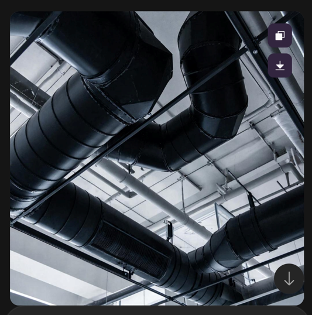
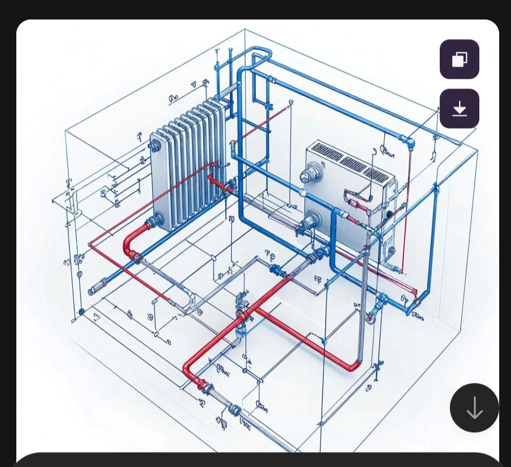

Как сгенерировать эскизы и концепции для инженерных систем

Коллеги, до этого мы говорили о генерации эскизов фасадов и генпланов - задач, которые традиционно лежат в зоне ответственности архитекторов. Но разве инженеру внутренних сетей нужны картинки? Оказывается, очень даже нужны. В своей работе мы постоянно сталкиваемся с необходимостью донести проектные решения до заказчика, эксперта или даже собственного руководства. Слова и чертежи не всегда эффективны. А вот наглядная схема, эскиз размещения оборудования в помещении или коллаж, показывающий, как будут выглядеть венткамеры или трубы в интерьере, могут сэкономить часы переговоров.
На этом уроке научимся генерировать инженерные визуализации. Вы получите готовые промпты, отработаете навыки на интерактивных тренажерах, а также получите в подарок чек-лист по эффективной генерации инженерных визуализаций в ИИ.
Нейросеть не заменит проектирование в Revit или AutoCAD, но станет мощным инструментом на этапе концепции, презентации и согласования, а также поможет быстро создавать наглядные материалы без привлечения дизайнеров.
Зачем инженеру сетей генерировать визуализации
Многие инженеры считают, что их работа - это чертежи и расчеты, а «картинки» оставьте архитекторам. Однако на практике мы постоянно сталкиваемся с задачами, где визуализация критически важна:
- Согласование с заказчиком. Заказчик часто не понимает условных обозначений на чертежах, но быстро реагирует на визуал: «Вот здесь я хочу видеть вентиляционную решётку именно такого цвета», «Трубы должны проходить скрыто, покажите, как это будет выглядеть».
- Выбор оборудования. Вы предложили несколько вариантов воздухораспределителей или светильников. Покажите их внешний вид в интерьере, чтобы заказчик мог выбрать.
- Презентация проекта. Члены экспертной комиссии, инвесторы, администрация города - все они воспринимают визуальную информацию легче, чем тексты и чертежи.
- Пояснительные записки. Иллюстрации (аксонометрические схемы, картинки типовых узлов) делают раздел более убедительным и понятным.
- Поиск идей и референсов. Нужно подобрать тип решётки, цвет воздуховода, дизайн радиатора - нейросеть может сгенерировать десятки вариантов за минуту.
Какие визуализации полезны инженеру сетей
В зависимости от раздела проектирования можно выделить несколько типов изображений, которые можно генерировать с помощью нейросетей:
| Тип визуализации | Примеры | Назначение |
| Схематические изображения | Принципиальная схема вентиляции, аксонометрия трубопроводов, 3D-схема трасс | Пояснительные записки, презентации |
| Визуализация оборудования | Внешний вид вентиляционных решёток, светильников, радиаторов, насосов | Согласование типов, цветов, форм |
| Интеграция в интерьер | Как будет выглядеть венткамера в подвесном потолке, трубы в помещении, скрытый монтаж | Демонстрация заказчику, обоснование решений |
| Коллажи и мудборды | Сочетание цветов отделки и инженерных элементов, примеры реализации | Быстрое согласование стиля |
| Иллюстрации типовых узлов | Узел прохода через кровлю, узел присоединения к стояку | Наглядность для монтажников, пояснительная записка |
Инструменты для генерации изображений (обзор)
Для работы с визуализациями инженерных сетей подойдут те же инструменты, что и для архитектурных эскизов, но с акцентом на технические детали.
| Инструмент | Особенности | Когда использовать |
| Kandinsky (бесплатный, Сбер) | Понимает русский язык, прост в использовании. Хорош для быстрых концепций, коллажей. | Для начальных набросков, подбора цветов, демонстрации заказчику. |
| ChatGPT Plus | Интегрирован с текстовой моделью, удобно уточнять. | Для итеративной доработки, создания серий однотипных изображений. |
| Leonardo.ai | Бесплатный тариф, хорош для генерации объектов (оборудование, текстуры). | Для создания отдельных элементов (решётки, светильники) с разной стилизацией. |
| Шедеврум (YandexGPT) | Отечественные, простые, бесплатные. | Для быстрых эскизов на русском языке. |
Для большинства инженерных задач оптимально начать с Kandinsky (бесплатно, русский язык), а для сложных фотореалистичных изображений использовать Midjourney.
Как составлять промпты для инженерных визуализаций
Промпт для генерации изображений инженерных систем должен включать:
- Тип объекта
- Материал и цвет
- Стиль
- Окружение
- Ракурс
- Качество
Приведем примеры для каждого раздела.
Презентация 1
Лист 1
Примеры промптов для инженерных визуализаций

Лист 3
ОВ. Пример реализации радиатора:

Лист 4
ВК. Пример реализации труб водоснабжения:

Лист 7
ЭОМ. Пример реализации светильников:

Лист 8
ЭОМ. Пример реализации розеток и выключателей:

Лист 9
ЭОМ. Пример реализации электрощитков:

Лист 11
ЭОМ. Пример реализации датчик движения:

. Источник и ограничения. Поля персонализации и печать исходной платформы не воспроизводятся.
- Если нужен «технический» рисунок, добавьте в промпт: «схема, чертеж, техническая иллюстрация».
- Для интерьерных решений добавляйте: «современный интерьер, светлые тона, скрытый монтаж».
- Для оборудования - «изолированный объект на белом фоне», если нужно показать только его.
Пошаговая методика генерации
- Определите цель и формат. Что вы хотите показать? (тип оборудования, его расположение, цвет, схему). Кому и для чего? (согласование с заказчиком, презентация, пояснительная записка)
- Соберите референсы (по желанию). Если есть реальные фотографии похожих решений, их можно использовать как вдохновение, но нейросеть может генерировать и без них.
- Составьте промпт. Используйте структуру: объект + детали + окружение + ракурс + качество. Добавьте ключевые слова, исключающие ненужные элементы (например, «без людей», «без надписей»).
- Сгенерируйте несколько вариантов. За один раз обычно получается 4 изображения. Оцените их, выберите лучшие. Если ни один не подходит, измените промпт (добавьте детали, уточните стиль).
- Итеративно улучшайте. После выбора базового варианта можно запросить уточнение: «сделай решетку белой, добавь тени». В Kandinsky перегенерировать с измененным промптом.
- Используйте в работе. Вставьте изображение в презентацию, пояснительную записку, отправьте заказчику. При необходимости приложите как референс для визуализатора.
Примеры из практики
Пример. Согласование типа вентиляционной решетки
Задача: Заказчик не может выбрать между прямоугольной и круглой решёткой в офисе. Нужно показать, как они будут выглядеть.
Промпт (Kandinsky):
«Вентиляционная решетка прямоугольная, белая, пластик, на белой стене, современный офис, крупный план, фотореализм».

После генерации - аналогичный промпт для круглой решётки. Заказчик увидел оба варианта и выбрал прямоугольную.
Пример. Подбор цвета воздуховодов
Задача: необходимо выбрать цвет воздуховодов в открытом потолке (офис в стиле лофт).
Промпт (Kandinsky):
«Открытый потолок, вентиляционные воздуховоды, окрашены в чёрный цвет, индустриальный стиль, офис, фотореализм».

Сгенерированы варианты с разными цветами (чёрный, серый, медный). Заказчик выбрал чёрный.
Пример. Схема для пояснительной записки (аксонометрия)
Задача: В пояснительную записку требуется вставить аксонометрическую схему системы отопления.
Промпт (Kandinsky):
«Аксонометрическая схема системы отопления, трубопроводы синие и красные, радиаторы, условные обозначения, технический рисунок, белый фон, без надписей»

Результат: получилась чистая схематичная иллюстрация, которую можно дорабатывать, давать ИИ варианты разводок и в итоге получить нужный вариант.
ИИ не будет за Вас рисовать схемы. Вы можете лишь направить его, указать какие варианты вам нужны или загрузить узел, который, например, нужно представить в виде картинки в 3D. Но он не знает всех тонкостей проектирования и правил, поэтому может показать лишь условно. ИИ – не замена, а помощник в проектировании.
Практическая часть
А теперь, как я и обещала, чек-лист по генерации визуализаций для инженерных систем в ИИ. Прямо сейчас скачайте его и используйте в своей работе.